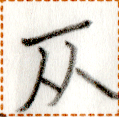

【入】
lit1
【入】
lit1


variants / 异体字 / 異体字
- 【吁】
 【嗚】
【嗚】
occurrences / 出现次数 / 出現回数 : 28
Words containing this character / 包含这个磷字的词语 / この燐字を含む語 :
| lit1 py {ie N} | 入力 {於N} | verb | to put effort {into N} | ||
| ta lit1 | 終入 | verb | to shut down, to stop operating, to disappear | ||
| lit1 sip1 ak1 | 入国書 | noun | passport | ||
| mok1 lit1 | 行入 | verb | to enter, to go in | ||
| lit1 {ie N} | 入 {於N} | verb | to enter {N} | ||
| lit1 nua2 | 入水 | verb | to go into the water | ||
| at lit1 | 加入 {於N} | verb | to add {into N} | ||
| co1 lit1 | 散入 | verb | to dissolve |